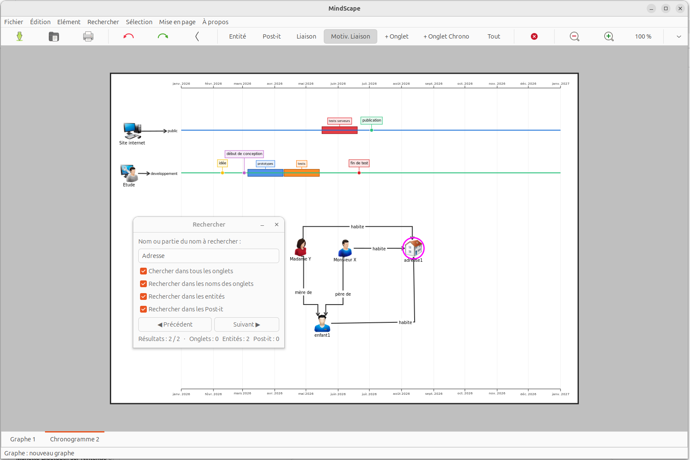

Reliez vos idées, placez-les dans le temps.
Logiciel de création de graphes relationnels et chronologiques, pour Ubuntu et Windows.
Gratuit pour un usage personnel. S’exécute aussi depuis une clé USB.

Fonctionnalités
Graphes relationnels
- Entités avec icône et nom.
- Liaisons nommées entre les entités.
- Motivation des liaisons : décrivez le pourquoi d’une liaison et affichez-le sous son nom.
- Post-it pour les notes libres.
Graphes chronologiques
- Événements datés et périodes sur une échelle de temps.
- Lignes (chronogrammes) rattachées à une entité.
Au quotidien
- Plusieurs onglets : un par graphe ou par chronogramme.
- Recherche d’une entité, d’un post-it ou d’un onglet, dans un ou plusieurs onglets.
- Annuler / rétablir, copier / coller, zoom.
- Organisation automatique des graphes.
- Export PDF et impression en A3 ou A4.
Installation sur Ubuntu
Après avoir téléchargé la dernière mise à jour, décompressez-la, puis :
- Copiez le dossier
MindScapedans votre dossier personnel. - Ouvrez ce dossier et faites un clic droit sur
installer_mindscape.sh. - Appuyez sur les touches Windows + A pour ouvrir la recherche Ubuntu.
- Tapez « mindscape ».
- Faites un clic droit sur son icône et choisissez « Épingler ».
C’est terminé : Mindscape est accessible depuis votre lanceur d’applications.
Un fichier .desktop est fourni pour lancer Mindscape depuis le menu d’Ubuntu.
Utilisation rapide
- Cliquez sur Entité pour ajouter une entité, puis sur Liaison pour relier deux entités.
- Ajoutez un Post-it pour une note libre.
- Ouvrez un onglet chrono avec + Onglet Chrono pour placer des événements et des périodes dans le temps.
- Enregistrez votre travail depuis le menu Fichier.
Soutenir le projet
Mindscape est développé sur mon temps personnel. Si l’outil vous est utile, vous pouvez soutenir son auteur.
Licence
© 2026 VOTRE NOM. Tous droits réservés.
Mindscape est gratuit pour un usage personnel et non commercial, conformément à la licence PolyForm Noncommercial 1.0.0.
Usage professionnel ou commercial (entreprise, activité rémunérée, intégration dans un produit ou service) : une autorisation préalable est nécessaire. Contactez l’auteur : adresse@exemple.fr.